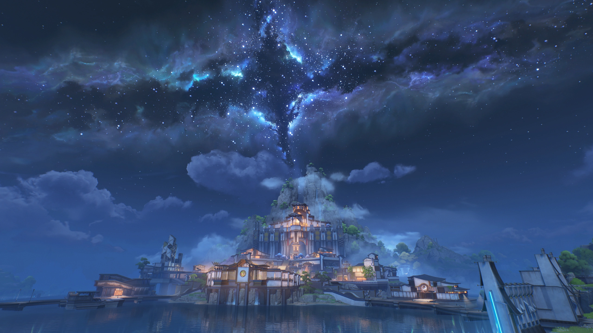
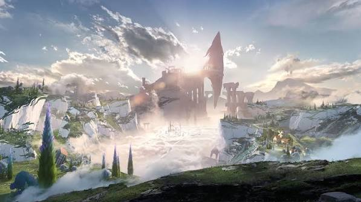
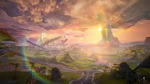
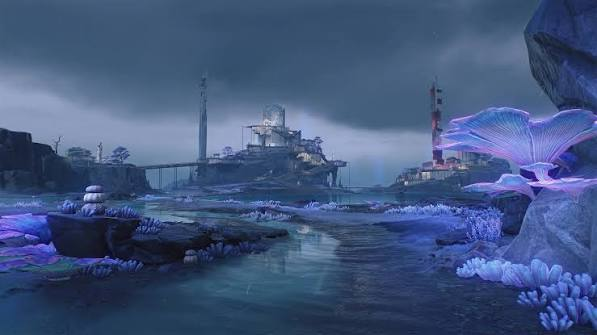

La trama transcurre en Solaris-3, una Tierra del futuro donde la humanidad fue casi extinguida por una catástrofe global llamada El Lamento. Este fenómeno alteró las leyes físicas, rompió la barrera entre la materia y la información, y dio origen a los Tacet Discords (monstruos nacidos de frecuencias y recuerdos acumulados). La humanidad sobreviviente descubrió que las frecuencias del mundo emiten "sonidos", aprendiendo a absorber monstruos en forma de Ecos y manifestando a los Resonadores (humanos con mutaciones que controlan ciertos elementos). Además, surgieron deidades protectoras conocidas como Centinelas.Despiertas como el Errante (Rover), un ser legendario con amnesia absoluta y la misteriosa habilidad de absorber frecuencias destructivas sin corromperse. Conforme avanzas, descubres que en el pasado fuiste el Lord Árbitro, una deidad o autoridad espacial creadora de los propios Centinelas, y que tu regreso está ligado a detener un ciclo eterno de destrucción planetaria provocado por los Trenodianos (los monstruos definitivos del Lamento).

El Rover despierta en una ciudad militar, lucha contra la secta terrorista Fractidus y ayuda a la Magistrada Jinhsi a purificar al Centinela dragón Jué para salvar la región

Una ciudad inspirada en la Venecia renacentista y desmantela un complot de la Orden Avisal, que intentaba resucitar a un monstruo masivo usando un torneo de gladiadores.

Una civilización humana subterránea para resolver disputas entre clanes cibernéticos y reparar gigantescos robots (Exostriders) que evitan el colapso tectónico.

Isla tecnológica oculta donde recupera recuerdos de su vida pasaday ayuda a la Guardacostas a reparar el sistema de datos que evita el fin del mundo.